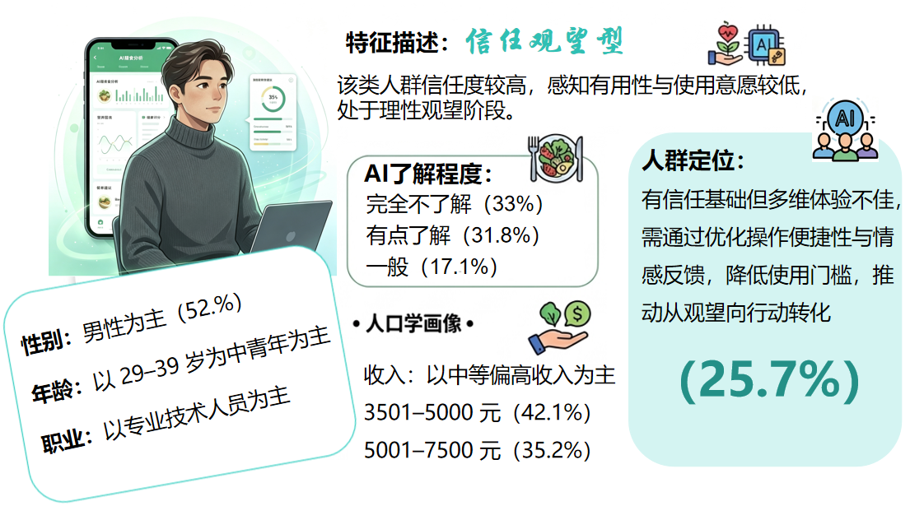
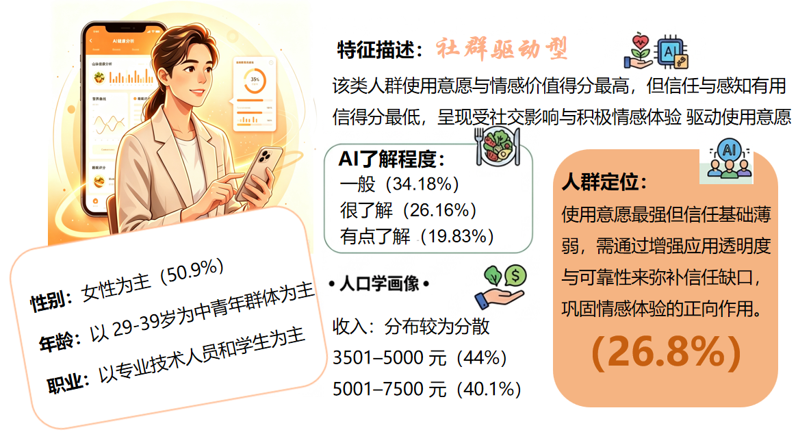
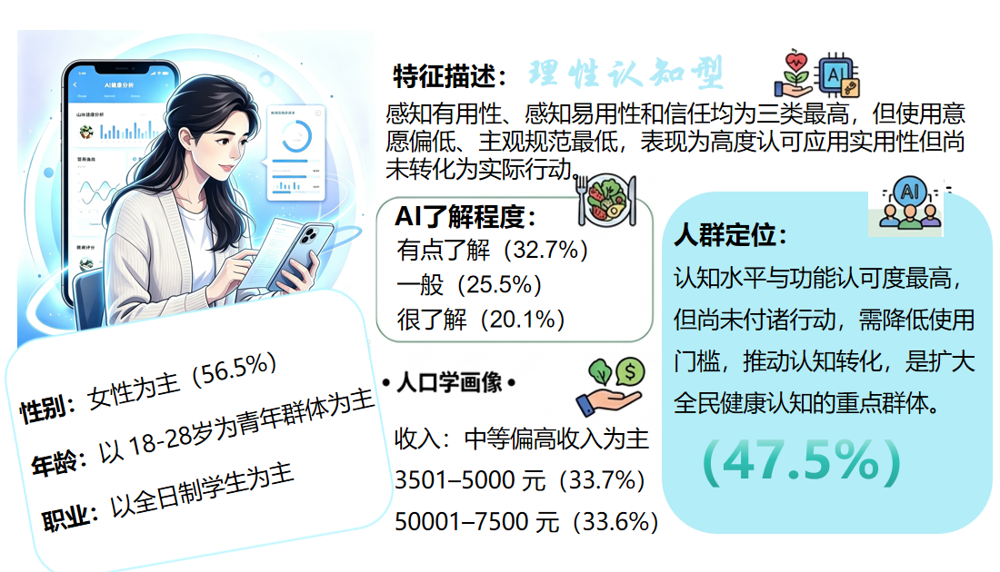

从问题到可执行建议
四条路径逐项回应痛点
本土化识别、分级付费、分层运营与生态协同，分别对应技术、商业、产品和应用场景问题。

本土化识别、分级付费、分层运营与生态协同，分别对应技术、商业、产品和应用场景问题。
三项核心建议解决直接痛点，再由生态协同补足长期落地条件。
基于1248份样本的K-means聚类分析，平均轮廓系数0.376，聚类效果稳健
理性认知型占47.5%，社群驱动型与信任观望型各约四分之一。策略重点因此不是“一套方案覆盖所有人”。



聚类结果用于运营洞察，不虚构未经报告验证的自动分类阈值
| 规则条件 | 分类结果 | 触达策略 |
|---|---|---|
| 信任度较高，但感知有用性与使用意愿较低 | 信任观望型 | 优化操作便捷性 + 加强情感反馈 |
| 使用意愿与情感价值较高，社交影响显著 | 社群驱动型 | 增强应用透明度 + 强化社群正向体验 |
| 认知与功能认可度较高，但尚未付诸行动 | 理性认知型 | 降低使用门槛 + 推动认知转化 |
企业、用户、政府共同推动行业向专业化、智能化、普惠化迈进
本土化识别 + 分层运营 + 分级付费，破解"识别不准、广告泛滥、功能同质化"三大痛点，重建用户信任。
从免费体验到付费订阅，从被动记录到主动健康管理，享受AI带来的科学膳食决策支持。
完善AI膳食识别标准与分级监管机制，推动健康城市与智慧湾区建设，让技术普惠更广人群。